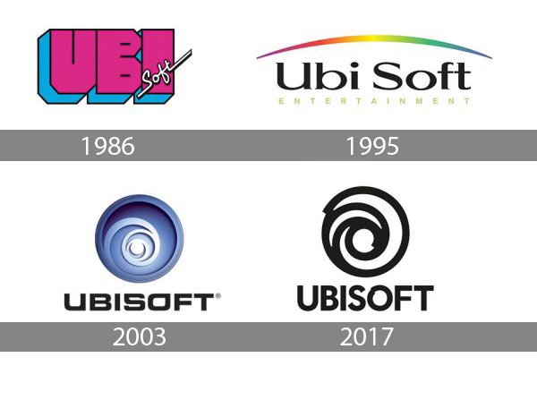
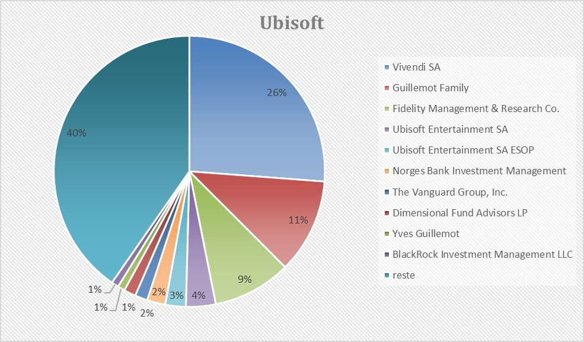

Histoire de sa création
Les années 1980 sont synonymes d’un grand nombre d’innovations technologiques, et l’arrivée d’Internet vient renforcer un secteur qui ne cesse d’évoluer à grande vitesse.
Les fondateurs
C’est pour cela qu’une fratrie composée de quatres frères, respectivement Yves, Michel, Christian et Gérard Guillemot, a eu comme idée de diversifier l’activité familiale, à l’origine spécialisée dans l’agriculture.

C’est ainsi que fut créée en 1984 Guillemot Informatique, une société de vente d’ordinateurs dans leur village natal, Carentoir, en Bretagne.
La société Ubisoft à proprement parler fut créée en 1986 des suites du mélange du préfixe « ubi », inventé de toutes pièces par Gérard Guillemot, et de « soft » signifiant logiciel en anglais.
Les logos d'Ubisoft
Ubisoft a changé son logo 4 fois en plus de 30 ans, en effet le logo minimaliste et monochrome, ressemblant à la lettre "O" n'est pas son logo initial.

Informations complémentaires
Ubisoft est une société anonyme et son siège social se trouve à Montreuil. Elle réunit donc beaucoup d’associés qui sont des personnes membres de la société et qui adhèrent au contrat de la société.